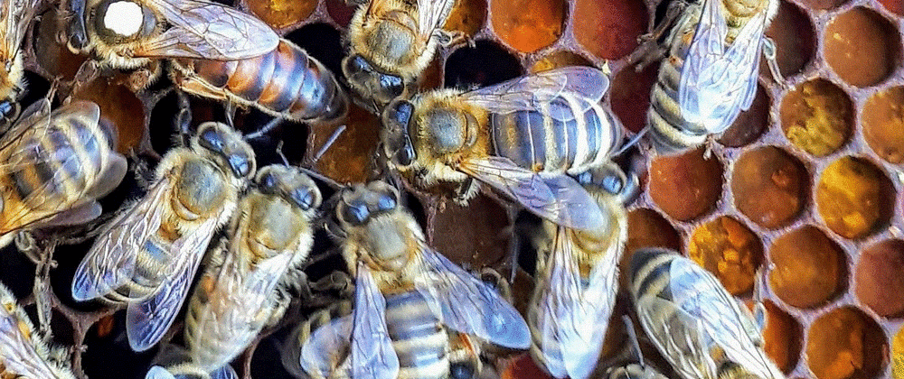

Bees Health detection using Azure Custom Vision Service

Every third bite of food relies on pollination by bees. Honey beehive losses are quite prevalent due to the diseased bees.
While many indications of hive strength and health are visible on the inside of the hive, frequent check-ups on the hive are time-consuming and disruptive to the bees' workflow and hive in general. By investigating the bees that leave the hive, we can gain a more complete understanding of the hive itself. For example, an unhealthy hive infected with varroa mites will have bees with deformed wings or mites on their backs. These characteristics can be observed without opening the hive.
We aim to detect healthy and various types of diseased bees such as bees having ant problems and varro and hive beetles with the help of Azure Custom Computer Vision Services.
This post also demonstrates how easy is to build world-class computer vision problems with minimal effort using Azure Custom Vision services.
Data
Data is taken from Honey Bee Images Full Set. We have taken a subset of the data provided in the dataset to demonstrate the power of Azure Cognitive Services
I have made a small dataset from the parent dataset in Kaggle mentioned above for quick experimentation. If you want to follow along, please have a look at Bees Little Data Set . The data has around 100 images of each of the classes healthy, ant problems, and varro and hive beetles
The steps to model and predict for this problem are as follows:
- Create a Custom Vision resource
- Create a Custom Vision AI project
- Add Images to the project
- Train on the images and create the model
- Publish the model and expose the endpoint for use by other clients
- Use the exposed endpoint and predict using new images
Create a Custom Vision Resource
Create a Custom Vision Resource in the Azure Portal. Please make sure to use the Free Tier F0 so that you do not incur any costs.


Create a Custom Vision AI Project
Navigate to https://www.customvision.ai/projects to create a custom vision project.
We created a project with
- Name - bees
- Project Type - Classification. Since we are classifying whether the bee is healthy, having ant problems, or having varro and hive mites
- Classification Type - Multiclass. There are 2 choices here, Multiclass and Multilabel. We choose Multiclass since the image is associated with only one class ( healthy, ant problems, varro, and hive mites ). A single image is not associated with multiple classes. If a single image was associated with multiple classes, then we had to choose the Classification type as Multilabel.


Add Images

Healthy Images
We upload the Healthy images and also tag them.

Varro Hive beetles
We upload the Varro Hive beetles images and also tag them.

We upload the ant problem images and also tag them.
Train the images
We train the images by clicking the Train button in the portal

Quick Training
We select Quick Training for the training of the images

Training Progress
Training on the dataset takes time. Once completed, we can see the metrics for classification such as Precision, Recall, and Accuracy

Performance
We observe that the Precision, Recall, and Accuracy are very high.

Quick Test
We choose an image of a bee having ant problems and see whether the model can predict correctly. We see that the model provides the highest probability to the ant problem class, therefore it successfully predicts

Publish
We can now Publish the model so that we can use the endpoint of the model for the prediction of unseen images.

Publish Model
We publish the model with the name as bee and the prediction resource is bee-Prediction

Project details
We display the Azure Cognitive project which has the project id, the published endpoint. This will be used for predicting the unseen test images.

Azure Cognitive Resources
We show the 2 Azure Cognitive Resources, the training resource as well as the prediction resource.

Code to predict
The complete code is present in GitHub in
{% github ambarishg/beeshealthdetection %}
Create the Node application
Navigate to a directory where the Node application is to be created.

Run the following command to create the package.json file.
npm init

We install the Custom Vision npm packages. We run the following commands in Azure Powershell to install these packages
Install the Client library
npm install @azure/cognitiveservices-customvision-training
npm install @azure/cognitiveservices-customvision-prediction

Import the Node js libraries
Create the file index.js and put the following lines in index.js
const util = require('util');
const fs = require('fs');
const TrainingApi = require("@azure/cognitiveservices-customvision-training");
const PredictionApi = require("@azure/cognitiveservices-customvision-prediction");
const msRest = require("@azure/ms-rest-js");
Intialize with Azure endpoint and keys
const sampleDataRoot = "f:/bees/";
const predictionKey = "<prediction key>";
const endPoint = "https://bees.cognitiveservices.azure.com/"
const publishIterationName = "bees"
const projectid = "<your-project-id>"
Authenticate with prediction keys
const predictor_credentials = new msRest.ApiKeyCredentials({ inHeader: { "Prediction-key": predictionKey } });
const predictor = new PredictionApi.PredictionAPIClient(predictor_credentials, endPoint);
Predict with unseen data
We predict with an image that has varro and hive beetles. We would see in the following section whether the prediction is correct or not.
const testFile = fs.readFileSync('f:/bees/Test/040_314.png');
(async () => {
const results = await predictor.classifyImage(projectid,
publishIterationName, testFile);
// Show results
console.log("Results:");
results.predictions.forEach(predictedResult => {
console.log(`\t ${predictedResult.tagName}: ${(predictedResult.probability * 100.0).toFixed(2)}%`);
});
})()
Results
We get the results and observe that the model predicts correctly the image varro and hive beetles. The varro and hive beetles class has the highest probability around 75%.